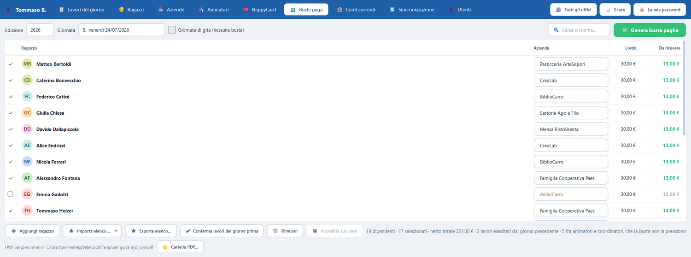

Dove si emettono le buste paga. La giornata si sceglie fra quelle del calendario, e la busta la prende solo chi lavora come dipendente: animatori e coordinatori restano fuori dall'elenco, e in fondo è scritto quanti ne sono stati lasciati fuori.
PdRManager — Buste paga
{kind=link}

Che cosa fa che cosa
I comandi
| Comando | Che cosa fa |
|---|---|
| Edizione e Giornata | La giornata si sceglie fra le dieci del calendario. I mercoledì di gita restano in elenco, marcati. |
| Giornata di gita | Segna la giornata come gita: non produce buste, e il compenso diventa festività sulla prima giornata lavorativa dopo. |
| ✅ Genera buste paghe | Emette le buste e stampa il PDF. È il pulsante per cui esiste tutto il programma. |
| Accredita sui conti | Versa gli stipendi sui libretti Excel della Cassa rurale. |
| Annulla buste | Cancella le buste della giornata e toglie gli accrediti dai libretti. |
Dal primo clic
Come si fa, passo per passo
- Clicca sulla scheda «Buste paga».
- In alto a sinistra scegli l'edizione, e accanto la giornata: le giornate sono già in elenco, numerate.
- L'elenco mostra i ragazzi che quel giorno hanno lavorato, con quanto prenderanno.
- Controlla che i numeri abbiano senso. Se una colonna «Da ricevere» dice «senza azienda», quel ragazzo non ha un lavoro assegnato.
- Clicca il pulsante verde «✅ Genera buste paghe», in alto a destra.
- Il programma prepara un file PDF e ti dice dove l'ha messo. Quel file va stampato.
- Attenzione: una volta emesse, le buste non si possono correggere. Se hai sbagliato si usa «Annulla buste» e si rifà tutto.
Se non funziona: Se il pulsante verde non fa niente, guarda in alto: se la giornata scelta è un mercoledì di gita, le buste non si emettono, ed è giusto così.